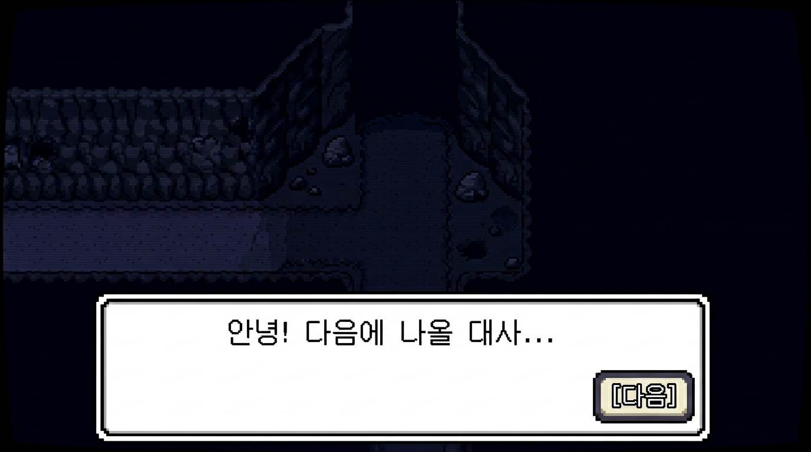

🎮 이 단원이 게임에서 쓰이는 곳 (언더테일·RPG)
큐 = 대사·이벤트가 나온 순서대로 처리될 때 씁니다. 대사 한 줄이 enqueue되고, 화면에 띄울 때마다 dequeue해서 "다음 대사"가 나와요. 샌즈나 어노잉 도그 대사가 선택지 전에 순서대로 나오는 그 구조가 큐예요.

큐(Queue, 큐)
큐는 줄 서기와 똑같아요. 먼저 줄 선 사람이 먼저 나갑니다. 영어로 FIFO(파이포)(First In First Out, 퍼스트 인 퍼스트 아웃) = "먼저 들어간 게 먼저 나온다"라고 해요.
연산
- enqueue(인큐): 줄 맨 뒤에 넣기. rear(리어, 뒤)에서 삽입.
- dequeue(디큐): 맨 앞에서 빼기. front(프론트, 앞)에서 삭제.
활용
게임에서 대사·이벤트가 순서대로 나가게 할 때 큐를 씁니다. 프린터 대기, BFS(비에프에스, 너비 우선 탐색) 등에도 써요.
우선순위 큐는 급한 것(우선순위 높은 것)부터 꺼내는 큐예요. 시험에 나올 수 있어요.
📌 실습 전: 파이썬에서 쓰는 API·함수
대응 큐는 "맨 뒤에 넣고, 맨 앞에서 뺀다"가 핵심이에요. 파이썬에서는 collections.deque(덱)를 쓰면 이 두 연산이 모두 빠릅니다.
from collections import deque/deque(리스트)- 표준 라이브러리 deque(double-ended queue)는 앞·뒤 모두에서 O(1)로 넣고 뺄 수 있어요. 큐처럼 "뒤에 넣고 앞에서 뺄 때" 쓰기 좋습니다.
덱.append(값)- 맨 뒤에 넣기 → enqueue(인큐)에 대응해요.
덱.popleft()- 맨 앞에서 하나 꺼내서 반환 → dequeue(디큐)에 대응해요. 이름에 "left"가 들어간 이유는 "앞쪽=왼쪽"이라고 보기 때문이에요.
왜 list가 아니라 deque인가요? 일반 리스트에서 pop(0)(맨 앞 제거)을 쓰면, 뒤의 값들을 한 칸씩 당겨야 해서 비용이 커요. deque는 맨 앞·맨 뒤만 다루도록 구현돼 있어서 큐 연산에 맞습니다.
👇 아래 코드가 실습창과 동일한 예제예요. 빈칸(_____)을 채운 뒤 아래 실습창에서 그대로 실행해 보세요.
# 큐: 먼저 넣은 게 먼저 나옴. popleft()로 앞에서 꺼냄
from collections import deque
q = deque(["첫번째", "두번째", "세번째"])
print("큐:", list(q))
# 빈칸: 큐의 맨 앞에서 하나 꺼내는 메서드 (pop / popleft / append 중)
out = q._____()
print("popleft() →", out)
print("남은 큐:", list(q))큐에서 맨 앞에서 꺼낼 때 쓰는 메서드? (파이썬 deque)
문제 및 해설
정답: 1, 2
풀이 단계
- enqueue 1, 2, 3 → 큐 안에는 [1, 2, 3] (앞이 1, 뒤가 3).
- dequeue 한 번 → 맨 앞에서 꺼내므로 1이 나옵니다. 남은 큐: [2, 3].
- dequeue 한 번 더 → 맨 앞에서 꺼내므로 2가 나옵니다. 남은 큐: [3].
왜 1, 2인가요? 큐는 FIFO(먼저 들어간 것이 먼저 나옴)라서, 먼저 넣은 1이 먼저, 그다음 2가 나옵니다.
한 줄 요약 큐에서는 항상 "맨 앞에서만" 꺼내므로, 넣은 순서대로 나옵니다. 더 많은 예제 →
문제 및 답 확인
답 보기
정답: A, B (꺼낸 순서)
풀이 enqueue A, B → 큐 [A, B]. dequeue → A 나옴(첫 번째로 꺼낸 값). enqueue C → 큐 [B, C]. dequeue → B 나옴(두 번째로 꺼낸 값). 따라서 지금까지 꺼낸 값은 A, B입니다.
도전과제
풀어 본 뒤 정답을 펼쳐 확인하세요.
정답 보기
나온 두 줄: "안녕!", "선택지가 있어요" (FIFO이므로 먼저 넣은 것부터)
큐에 남은 것: "1. 예 2. 아니오" 한 개. 게임에서 "다음" 버튼을 두 번 눌렀을 때와 같은 상황이에요.
정답 보기
공통점: 모두 "순서가 있는" 자료를 한 줄로 다룬다.
차이: 스택은 맨 위에서만 넣고 빼므로 LIFO. 큐는 맨 뒤에 넣고 맨 앞에서 빼므로 FIFO.
위 실습은 이 강의(큐)에서 배운 enqueue·dequeue, 즉 append·popleft를 쓰는 예제입니다. 손으로 해보려면 실습: 큐 (손으로 하기).